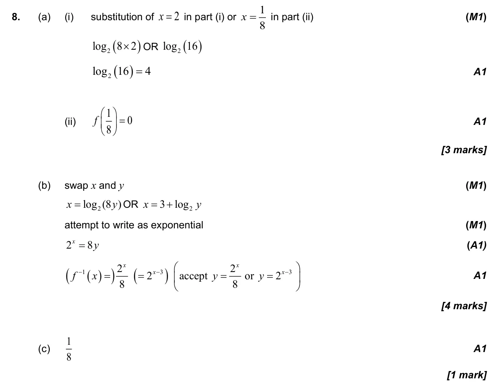
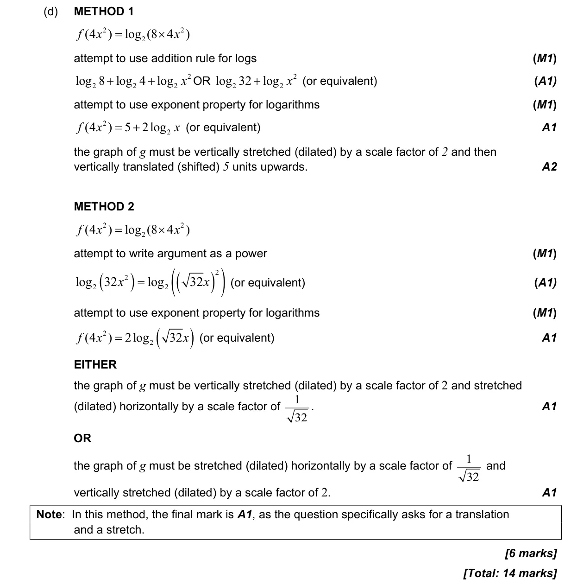

14 marks P1 TZ1 Section B No calculator 1.5 Laws of exponents with integer exponents and introduction to logarithms2.11 Transformations of graphs1.7 Laws of exponents and logarithms2.5 Composite functions, identity and finding inverse2.2 Functions, notation, domain, range and inverse as reflection Question Hide breakdown abcd Markscheme 